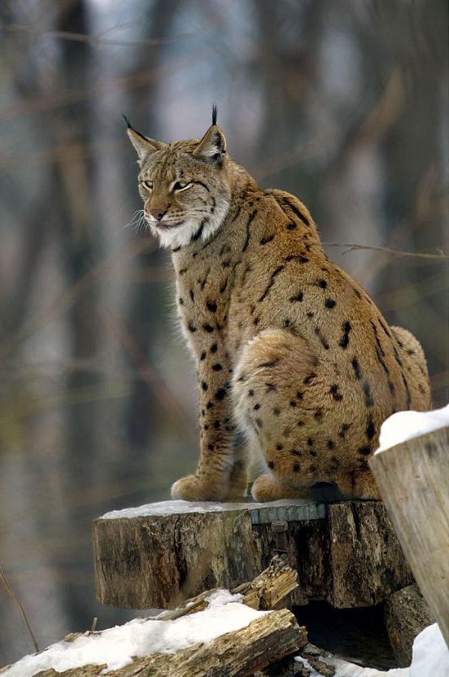

El lince es un felino que conforma el género Lynx, integrado por cuatro especies: el lince de Canadá (Lynx canadensis) y el lince rojo (Lynx rufus) que habitan en Norteamérica, el lince ibérico (Lynx pardinus) y el lince euroasiático (Lynx lynx), distribuidos en Eurasia.
Una de sus características más resaltantes es su pelaje. En el extremo de las orejas tiene unos mechones de pelos erguidos, de color negro. El pelo que recubre el cuerpo, inclusive las patas, es denso y largo. Estas características pueden variar de acuerdo a las estaciones.
El lince está en riesgo de extinción, y el lince ibérico (Lynx pardinus) está bajo grave amenaza de desaparecer de su hábitat natural. Algunas de las causas es el aislamiento geográfico y la competencia interespecífica.
– Pelaje. Es largo y denso, aspectos que variían durante las estaciones. Así, en invierno se vuelve más grueso alrededor del cuello y puede llegar a medir hasta 10 centímetros de longitud. En la punta de sus orejas tiene unos característicos mechones de pelo negro.
Color. Puede ir desde beige hasta marrón dorado, con manchas negras o marrón oscuro, especialmente en las extremidades. En cuanto al pecho, el vientre y la parte interna de las extremidades, son blancos. Tanto el largo como el color tienen variaciones de acuerdo al clima donde habite. Los que viven al suroeste de Estados Unidos tienen el pelo corto y oscuro. A medida que su hábitat se localiza más al norte, donde las temperaturas son más bajas, el pelo es más grueso y más claro.
